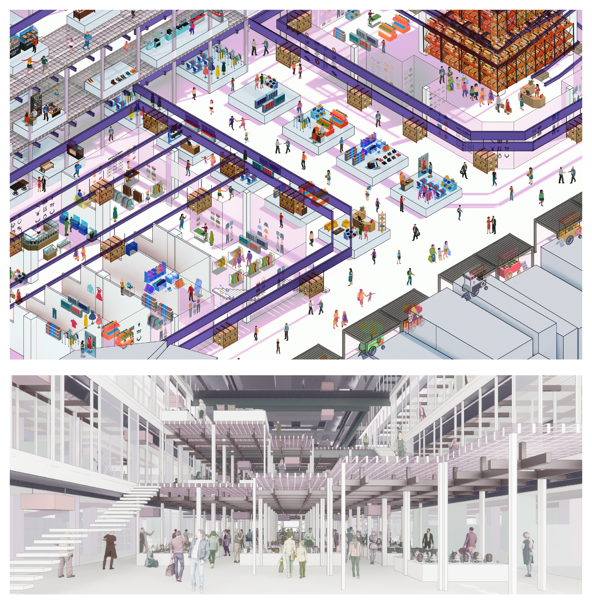
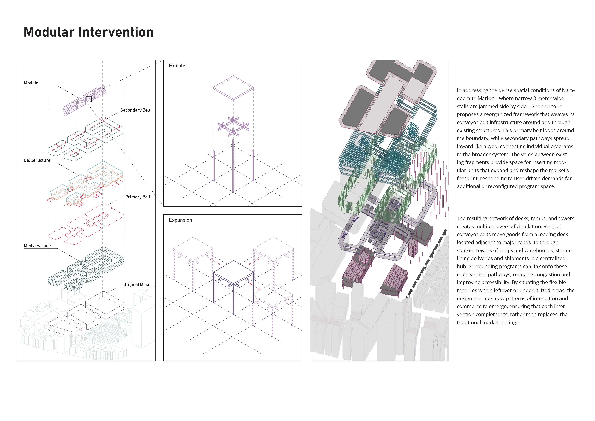

Shoppertoire is an undergraduate thesis proposal for Namdaemun Market, a traditional marketplace in central Seoul. Its elements are conveyor belts, storage units, and shops. A primary belt loops around the site and secondary belts branch inward, carrying goods between a loading dock, storage towers, and shops. Modular units fill the voids between existing buildings, so the market can expand or shrink with demand.
Shop enclosures are transparent, and screen facades show what is sold in each area. The proposal draws on Yona Friedman's view of architecture as a catalogue of repertoires. Occupants are meant to configure and reconfigure the space themselves. The project received the Encouragement Award.

